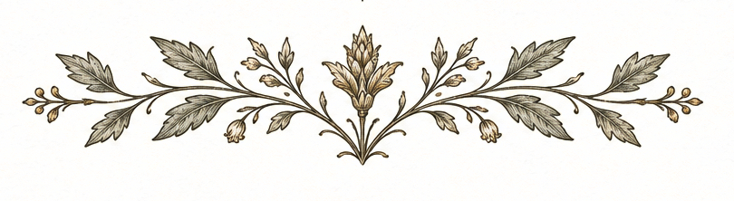

The Field Notes collect the Institute's ongoing record of observation and inquiry. They include completed essays, notes toward unfinished arguments, and papers whose present condition is recorded with appropriate candor.
The archive is arranged in no particular order, on the grounds that peripatetic inquiry rarely presents itself in a logical sequence and should not be expected to. Papers marked In preparation, Under review, Deferred indefinitely, or Not yet recovered from the field are listed because the Institute considers a stated intention to be an institutional commitment, even where the work itself remains incomplete or missing.

-
Field Note No. 1 The Epistemology of the Unnecessary DetourAvailable
A preliminary examination of what, precisely, is learned by taking a route that was not required. The paper addresses whether knowledge acquired incidentally — during a deviation, a digression, or a return by an unfamiliar path — is different in kind from knowledge sought directly, and whether the difference, if any, matters to the conduct of peripatetic inquiry.
-
Field Note No. 2 Toward a General Theory of the Interesting StreetIn preparation
An inquiry into what distinguishes a street that repays sustained attention from one that does not. The paper considers whether the property of interest belongs to the street itself, to the circumstances of the encounter, or to some combination of the two that cannot be fully predicted in advance of the walk.
-
Field Note No. 3 On the Interpretive Limitations of the AutomobileIn preparation
A comparative study of the observational conditions produced by walking and by driving, with particular attention to what the automobile cannot reveal about a place — and whether this limitation is recognised by those who rely on it as their primary mode of passage. The paper does not argue against driving. It argues for awareness of what driving costs.
-
Field Note No. 4 A Preliminary Classification of Benches Suitable for ContemplationUnder review
A typological study of benches encountered during peripatetic inquiry, with attention to their position, orientation, apparent purpose, and the quality of observation they afford. The paper proposes five categories and a provisional account of why so many benches appear to have been placed to face something that is no longer there.
Editorial note
The manuscript has been submitted to the Institute's informal review process, which consists of the Founding Director reading it again at a later date and deciding whether he still agrees with himself. This process is ongoing. The bench classification scheme itself remains provisional. -
Field Note No. 5 The Relationship Between Walking Pace and Historical ImaginationDeferred indefinitely
A speculative inquiry into whether the rate at which one moves through a landscape affects the historical period one is most inclined to imagine it in. Preliminary observations suggest that a slow pace encourages association with earlier periods, though the mechanism is unclear and may involve the lower frequency of motor vehicles encountered rather than pace itself.
Editorial note
The paper has been deferred on the grounds that its central hypothesis, while interesting, requires either substantially more field research or a willingness to proceed with the available evidence that the Founding Director has not yet been able to sustain. It is expected to remain deferred until one of these conditions is met. -
Field Note No. 6 Notes Toward an Atlas of Places One Intended to Visit but Did NotNot yet recovered
A proposed cartographic and discursive project. The atlas would document places that appeared on routes, itineraries, or map margins as destinations of potential interest but were never reached — cataloguing their locations, the reasons given or implied for not visiting, and, where determinable, whether the decision to pass them by was subsequently regarded as correct.
Editorial note
The notes for this paper were recorded across at least three separate notebooks during the period 2022–2024. The Institute has not been able to establish whether the notebooks are in one place, whether the relevant entries were made in the notebooks believed to contain them, or whether the proposed atlas has in some sense become an instance of its own subject matter. The question is considered open.
The Field Notes are a working archive. Entries are added when the work justifies it, not on a schedule. The Institute regards this as the appropriate approach.